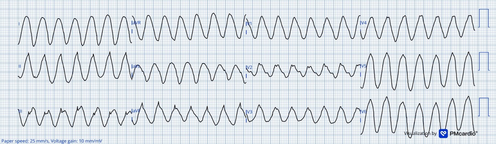
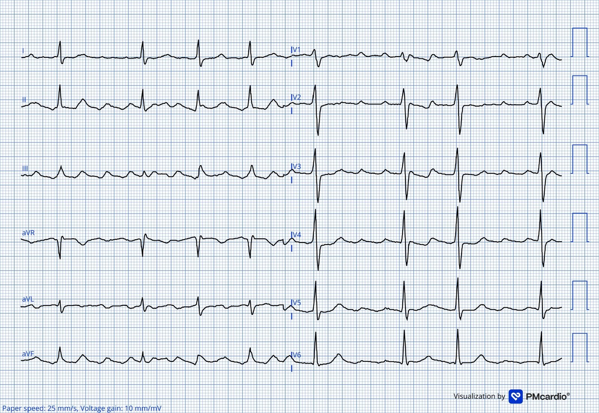
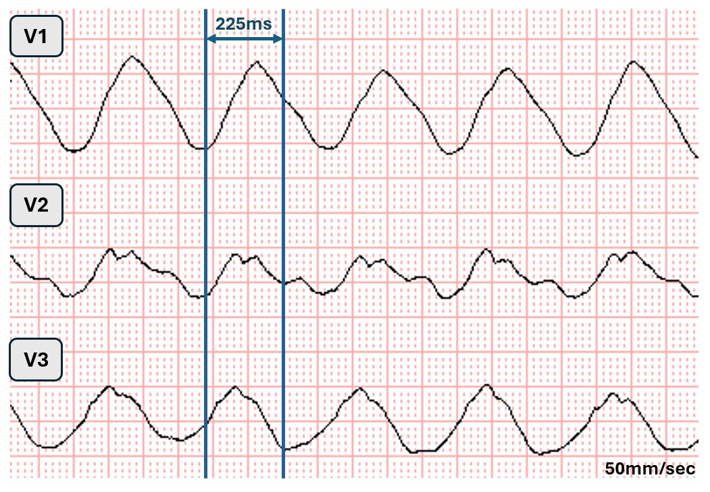
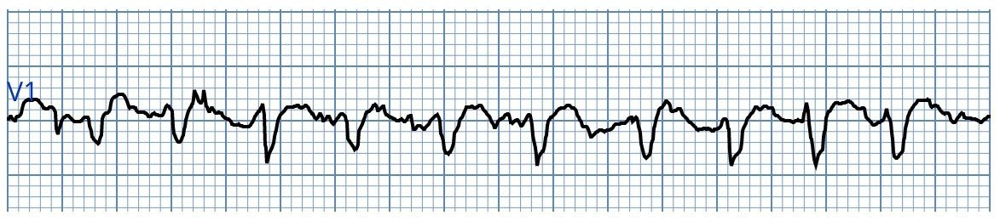
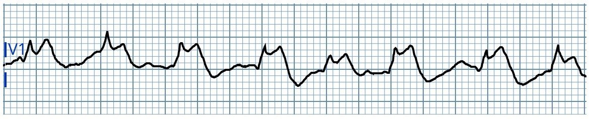

23/03/2026 — Ngất và nhịp nhanh QRS rộng sau gắng sức thể lực
Bản dịch tiếng Việt của bài "Syncope and WCT after physical exertion" – Dr. Smith’s ECG Blog. Giữ nguyên toàn bộ 5 hình ảnh của bản gốc.
Tác giả: Magnus Nossen
Bệnh nhân hôm nay là một nam giới khoảng 60 tuổi, có tiền sử rung nhĩ được điều trị theo chiến lược kiểm soát nhịp (metoprolol và flecainide). Ngoài ra ông khỏe mạnh và năng vận động thể lực. Siêu âm tim trước đây không có gì đáng chú ý, chỉ ghi nhận hở van hai lá nhẹ. Vào ngày nhập viện, khi đang xúc tuyết, ông đột ngột thấy yếu, choáng váng và bị một cơn ngất. Sau khi tỉnh lại, ông nhanh chóng bị cơn ngất thứ hai. Người xung quanh đã gọi đội cấp cứu ngoài viện (EMS), và khi EMS đến, bệnh nhân tỉnh táo, tiếp xúc tốt, không đau ngực. Các nhân viên cấp cứu ngoài viện đến hiện trường đánh giá bệnh nhân ổn định. Điện tâm đồ đầu tiên ghi được trình bày dưới đây.
Bạn đọc điện tâm đồ này thế nào và sẽ xử trí bệnh nhân này ra sao?
Điện tâm đồ #1 do EMS ghi


Điện tâm đồ này cho thấy nhịp nhanh QRS rộng (wide complex tachycardia, WCT). Khoảng RR đo được 345ms, tương ứng tần số thất khoảng 175 nhịp/phút.
Nhân viên cấp cứu tại hiện trường ghi nhận huyết áp tâm thu 100 mmHg và SpO2 khoảng giữa 90% vào cùng thời điểm ghi điện tâm đồ #1. Sau khi hội ý với bác sĩ nội khoa tại bệnh viện địa phương, họ quyết định tiêm bolus amiodarone 300mg trong lúc chuyển bệnh nhân tới khoa cấp cứu (ED) gần đó. Sau khi dùng amiodarone, tần số tim trở về bình thường.
Smith: Thay đổi này là do amiodarone? Hay chỉ là trùng hợp? Hình thái này là sóng hình sin (sine wave). Theo tôi, amiodarone không phải là câu trả lời. Tôi sẽ lo ngại QRS rất rộng là do flecainide hoặc do tăng kali máu. Chiến lược xử trí của tôi sẽ là cho calci liều cao ngay lập tức, và điều này phù hợp với cả hai nguyên nhân. VT do một trong hai nguyên nhân này cũng có thể xảy ra, vì vậy nếu calci không hiệu quả, tôi sẽ thử sốc điện chuyển nhịp.
Magnus tiếp tục: Tôi cho rằng bệnh nhân này không ổn định. Xử trí bằng an thần và sốc điện chuyển nhịp khẩn cấp lẽ ra cũng là một lựa chọn khác, vì bệnh nhân đã có hai cơn ngất và đang có WCT kéo dài.
Quá trình chuyển tới khoa cấp cứu diễn ra suôn sẻ. Điện tâm đồ dưới đây được ghi sau lần đánh giá đầu tiên tại khoa cấp cứu, khoảng 30 phút sau khi dùng amiodarone và đã kiểm soát được tần số.
Điện tâm đồ #2 ghi tại khoa cấp cứu


Lúc này điện tâm đồ cho thấy một rối loạn nhịp nhĩ với tần số thất đã được kiểm soát. Rối loạn nhịp này giống nhưng không hoàn toàn phù hợp với cuồng nhĩ. Nhịp có vẻ là cuồng nhĩ ở chuyển đạo III, nhưng không thấy sóng cuồng nhĩ xuất hiện đều đặn ở các chuyển đạo V1-V2 — nên đây nhiều khả năng là một dạng nhịp chuyển tiếp giữa cuồng nhĩ và rung nhĩ hoặc ngược lại. Không có dấu hiệu thiếu máu cục bộ rõ ràng và không có sóng Q bệnh lý. Có thay đổi đoạn ST không đặc hiệu ở nhiều chuyển đạo. Những thay đổi này là do các sóng “cuồng nhĩ” chồng lên.
Ca bệnh tiếp diễn: Khi đến viện, huyết áp 185/100. Tần số tim khoảng 80 nhịp/phút, SpO2 ở mức cao 90%. Tại khoa cấp cứu không ghi nhận thêm cơn WCT nào. Điện tâm đồ trước viện được đọc là nhịp nhanh thất, và bệnh nhân được nhập khoa tim mạch để thăm dò chẩn đoán thêm. Siêu âm tim qua thành ngực cho thấy hở van hai lá (MR) nhẹ đến vừa, nhưng không có rối loạn vận động thành (WMA), không lớn buồng tim hay bất thường bệnh lý nào khác. Cộng hưởng từ tim bình thường, loại trừ nhồi máu cơ tim cũ hay xơ hóa cơ tim. Chụp động mạch vành cũng được thực hiện, cho thấy các động mạch vành hoàn toàn bình thường.
Theo bạn, nguyên nhân nhiều khả năng nhất gây WCT ở bệnh nhân này là gì?
Tôi không trực tiếp tham gia chăm sóc bệnh nhân. Tuy nhiên, tôi đã xem điện tâm đồ trước viện ngay trong ngày nhập viện. Tôi không cho rằng nhịp nhanh thất (V-tach) là chẩn đoán nhiều khả năng nhất. Vì sao tôi nói vậy? Có nhiều lý do. Mặc dù ở nhóm tuổi này phần lớn nhịp nhanh QRS rộng là VT, chúng ta biết bệnh nhân có siêu âm tim bình thường và đang được điều trị nội khoa rung nhĩ. Các phức bộ QRS ở điện tâm đồ #1 rất rộng và ở nhiều chuyển đạo có dạng sóng hình sin! Tôi đo thời gian QRS là 225ms. QRS rộng đến mức này hiếm gặp trong VT. Điều đó còn hiếm hơn nữa ở một bệnh nhân có chức năng tâm thu bình thường trên siêu âm tim và không có giãn buồng tim đã biết.
Dưới đây tôi trích lại các chuyển đạo V1-V3 từ điện tâm đồ gốc. Điện tâm đồ gốc được ghi với tốc độ giấy 50mm/giây.


Trong đoạn trích trên đây gồm các chuyển đạo trước tim phải, tôi thừa nhận rất khó xác định chính xác điểm khởi đầu và kết thúc của QRS. Tôi nghĩ “dễ” nhất là đánh giá điểm đầu và điểm cuối QRS ở chuyển đạo V2. Rõ ràng thời gian QRS vượt xa 200ms, tôi đo được 225ms.
Bất cứ khi nào bạn thấy khó xác định điểm khởi đầu và kết thúc của QRS và QRS rất rộng (>180ms), bạn luôn cần nghĩ tới tác dụng chẹn kênh natri.
Bệnh nhân được kê flecainide (100mg) hai lần mỗi ngày kèm một thuốc chẹn beta liều thấp. Flecainide có thể chuyển rung nhĩ thành cuồng nhĩ và còn làm chậm tần số cuồng nhĩ một cách rõ rệt. Bệnh nhân này xuất hiện triệu chứng khi gắng sức thể lực. Đây là đặc điểm của cuồng nhĩ dẫn truyền 1:1, vì tăng trương lực giao cảm (adrenergic) sẽ tăng cường dẫn truyền qua nút AV, khiến dẫn truyền 1:1 dễ xảy ra hơn. Bệnh nhân được kê metoprolol phóng thích chậm 25mg một lần mỗi ngày. Đôi khi thuốc chẹn beta «liều thấp» không đủ để ngăn dẫn truyền AV 1:1 trong tình trạng cường giao cảm mạnh, như rõ ràng đã xảy ra ở bệnh nhân hôm nay!
Flecainide có đặc tính phụ thuộc tần số sử dụng (use-dependent), nghĩa là tác dụng — và khả năng gây độc — của thuốc chịu ảnh hưởng của tần số tim. Tần số tim càng nhanh, tác dụng chẹn kênh natri càng mạnh. Điều này giải thích vì sao các rối loạn nhịp nhanh ở bệnh nhân dùng flecainide có thể biểu hiện với phức bộ QRS giãn rộng rõ rệt và có hình dạng kỳ dị. Điều này cũng giải thích vì sao điện tâm đồ # 2 có thời gian QRS bình thường. Amiodarone đã ức chế nút AV đủ để kiểm soát tần số thất. Khi tần số thất giảm, tác dụng chẹn kênh natri phụ thuộc tần số sử dụng giảm bớt và QRS hẹp lại.
Không hiếm khi tác dụng chẹn kênh natri biểu hiện bằng “hình thái giống Brugada” ở các chuyển đạo V1-V2, điều mà chúng ta cũng thấy trong ca hôm nay. (Điện tâm đồ #2 có một số đặc điểm giống Brugada)
Sau khi thăm dò toàn diện, kết luận được đưa ra là WCT này do cuồng nhĩ dẫn truyền 1:1, với đặc tính phụ thuộc tần số sử dụng của flecainide là nguyên nhân gây ra các phức bộ QRS cực rộng và kỳ dị. Bệnh nhân được triệt đốt cuồng nhĩ và ngừng flecainide. Không có dữ liệu theo dõi dài hạn.
Phần bổ sung cho ca hôm nay
Tác dụng phụ thuộc tần số sử dụng của flecainide có ý nghĩa lâm sàng không?
Có!
Dưới đây là hai dải nhịp từ một bệnh nhân KHÁC. Bệnh nhân nam ngoài 70 tuổi này đang dùng flecainide để kiểm soát nhịp rung nhĩ. Các bản ghi dưới đây, cách nhau khoảng 60 phút, minh họa đặc tính phụ thuộc tần số sử dụng của flecainide khi nhịp nhanh có thể làm thay đổi đáng kể thời gian và hình thái QRS như thế nào.
Dải nhịp #1 tại thời điểm 0 (time zero)


Dải nhịp ban đầu của một bệnh nhân rung nhĩ đáp ứng thất nhanh (RVR). Dải nhịp chuyển đạo V1 này cho thấy tác dụng chẹn kênh natri nhẹ với QRS kéo dài nhẹ
Dải nhịp #2 tại phút thứ 60


Dải nhịp ghi lại ở cùng bệnh nhân khoảng 60 phút sau lần ghi đầu tiên. Bản ghi này cho thấy QRS bất thường rõ rệt, biểu hiện hình ảnh giống Brugada không điển hình do tác dụng phụ thuộc tần số sử dụng của flecainide gây ra! Ngay sau khi ghi điện tâm đồ thứ hai này, bệnh nhân bị ngừng tim do rung thất (V-fib). Ca này được trình bày chi tiết TẠI ĐÂY.
Xem thêm các ca về flecainide tại ca này, ca này và ca này.
Những điểm cần học
- Bất cứ khi nào phức bộ QRS trở nên giãn rộng rõ rệt và/hoặc có hình dạng kỳ dị, hãy nghĩ tới tác dụng chẹn kênh natri, như gặp với flecainide, tăng kali máu hoặc ngộ độc thuốc chống trầm cảm ba vòng.
- Ở bệnh nhân rung nhĩ được điều trị bằng flecainide, luôn nghĩ tới cuồng nhĩ dẫn truyền 1:1 như một nguyên nhân có thể gây nhịp nhanh QRS rộng.
- Cần nhớ rằng flecainide có đặc tính phụ thuộc tần số sử dụng, với tác dụng mạnh hơn và nguy cơ phản ứng bất lợi cao hơn ở tần số tim nhanh hơn.
- Tính phụ thuộc tần số sử dụng của flecainide xảy ra ở cả cơ nhĩ và cơ thất. Tác dụng trên cơ thất có ý nghĩa lâm sàng nhất, vì có thể dẫn tới rung thất như trong ca được dẫn ở phần bổ sung.
= = =
======================================
BÌNH LUẬN CỦA TÔI, bởi KEN GRAUER, MD (23/3/2026):
Ca bệnh quan trọng của BS. Nossen — ở chỗ nó làm nổi bật một loạt điểm cần học về cách đánh giá nhịp WCT đều (nhịp nhanh QRS rộng) ở bệnh nhân đang dùng Flecainide.
- Như BS. Nossen đã nêu — Rất dễ bỏ sót các dấu hiệu ở điện tâm đồ #1 (do EMS ghi), đó là: i) QRS rất rộng! — và, ii) hình thái QRS của VT đơn dạng ở tần số nhanh nhưng không quá nhanh ~170/phút lẽ ra không nên biểu hiện hình thái QRS kỳ dị đến mức giống sóng hình sin, không phân biệt rõ được điểm khởi đầu và kết thúc của từng phức bộ QRS như ở điện tâm đồ #1.
- Thay vào đó — cần nghi ngay tới một tình trạng ngộ độc (tức là tăng kali máu, chẹn kênh natri, v.v.) khi thấy điện tâm đồ #1.
= = =
Ngộ độc Flecainide:
Như trong Bình luận của tôi ở bài đăng ngày 21 tháng Năm năm 2023 — ngộ độc Flecainide là một tình trạng tương đối ít gặp — nhưng cực kỳ quan trọng cần nhận biết. Cơ chế gây độc là đa yếu tố. Khả năng gây các tác dụng lâm sàng bất lợi lan rộng là rất lớn. Cơ chế và các tác dụng lâm sàng hệ quả gồm:
- Chẹn kênh natri — ức chế các kênh natri nhanh, làm giảm vận tốc dẫn truyền, gây giãn rộng QRS đáng kể (nếu không nói là rõ rệt) và kéo dài khoảng PR.
- Làm chậm các kênh calci và kali — hệ quả là giảm co bóp (tác dụng inotrop âm) và tụt huyết áp.
- Phụ thuộc tần số (như BS. Nossen đã nhấn mạnh ở trên): Vì thuốc gắn kết nhiều hơn ở tần số tim nhanh hơn — độc tính (đặc biệt là giãn rộng QRS) nặng lên khi có nhịp nhanh (như dường như đã xảy ra trong ca hôm nay khi xuất hiện cuồng nhĩ (AFlutter) dẫn truyền 1:1).
Điều cốt lõi: Ngoài tác dụng inotrop âm và gây tụt huyết áp của ngộ độc Flecainide — còn có ức chế tất cả các đường dẫn truyền chính (tức là ở nút AV, hệ His-Purkinje và ở tâm thất). Điều này có thể gây ra một loạt rối loạn dẫn truyền, bao gồm nhiều dạng blốc AV; blốc nhánh; suy giảm chức năng máy tạo nhịp.
- QRS có thể giãn rộng rõ rệt với hình thái kỳ dị (như thấy ở điện tâm đồ #1 của ca hôm nay).
- Rối loạn nhịp gây tử vong có thể là biến cố cuối cùng (VT/VFib; vô tâm thu).
- Nhìn chung — gợi ý ngộ độc Flecainide khi: i) Thời gian QRS tăng ≥50% (thường tạo ra QRS ≥0,18 giây); — và/hoặc, ii) Khoảng PR tăng ≥30% (thường tới PR ≥0,26 giây). QTc cũng có thể tăng (dù phần lớn tác dụng này là do QRS kéo dài chứ không phải QT kéo dài).
= = =
Các cân nhắc trong xử trí:
Bệnh nhân hôm nay được điều trị bằng Amiodarone — sau đó tần số tim chậm lại và phức bộ QRS trở về bình thường cả về độ rộng lẫn hình thái (như thấy ở điện tâm đồ #2). Nhưng nếu các biểu hiện lâm sàng của ngộ độc Flecainide vẫn tồn tại:
- Natri bicarbonat — là điều trị được lựa chọn (Bicarbonat cung cấp một lượng natri lớn, cạnh tranh đẩy Flecainide ra khỏi kênh natri — đồng thời làm tăng pH máu, qua đó giảm phần Flecainide ion hóa có hoạt tính).
- Thận trọng: Dùng các thuốc chống loạn nhịp thông thường có thể không hiệu quả, thậm chí làm nặng thêm rối loạn nhịp do Flecainide vì làm chẹn kênh natri nặng hơn (Stolear và cs. — Cureus 16(6),e62923- 2024). Amiodarone có thể làm ngộ độc Flecainide nặng thêm do ức chế CYP450 2D6, isoenzym chịu trách nhiệm chuyển hóa Flecainide (Drugs.com).
- ILE (nhũ dịch lipid tĩnh mạch — Intravenous Lipid Emulsion) — một biện pháp điều trị khác được đề xuất — nằm ngoài phạm vi của ECG Blog này (ILE hoạt động như một “bồn chứa lipid” (lipid sink), thu hút và cô lập thuốc ưa mỡ trong máu, qua đó giảm gắn kết vào tế bào cơ tim).
= = =
= = =